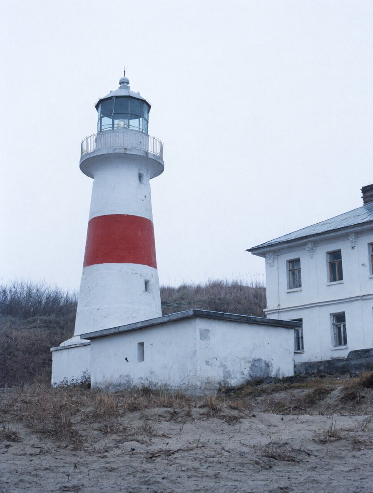
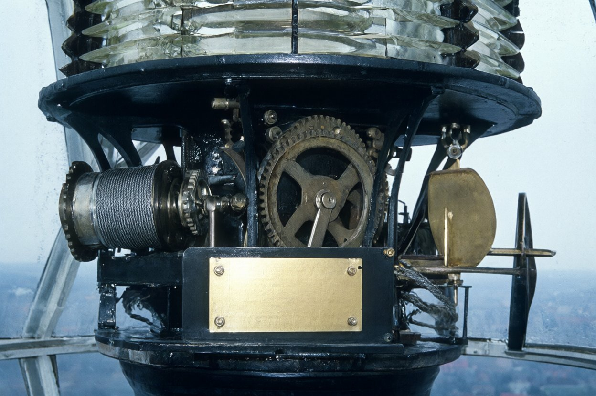
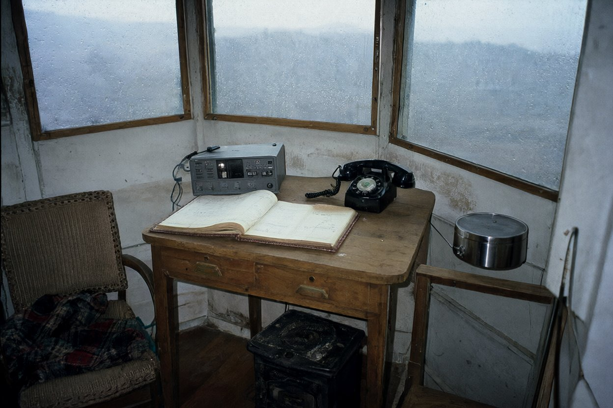
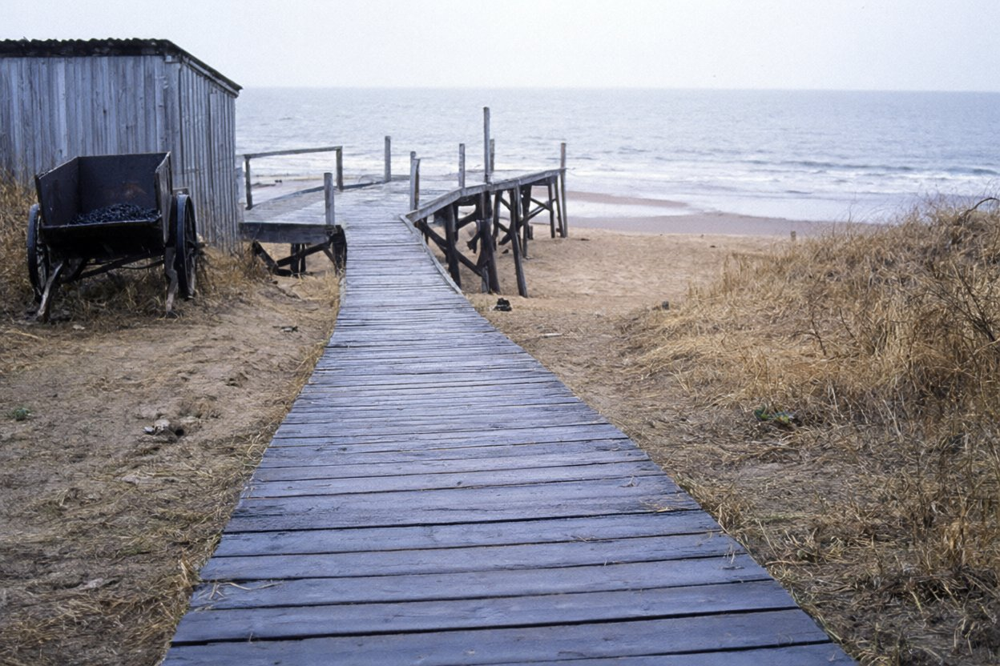

270011, м. Одеса, вул. Канатна, 22, оф. 5 · тел./факс (0482) 24-17-63
Справа № 98/117 «Ліман Стар»
Акт огляду № 41/98
маяка Вовча коса (Очаківський район гідрографічної служби)
Дата, час
24.11.1998, 10:00–12:30
Місце
маяк Вовча коса, 9 км на ПдЗх від с. Солоне Очаківського р-ну
Оглядали
аварійні комісари бюро (польова група № 2)
Присутній
начальник маяка Мартинюк Петро Гнатович
Погода
хмарно, мряка, вітер З 5–6 м/с, +6°
Підстава
доручення директора бюро від 23.11.1998; огляд проведено з відома начальника Очаківського району гідрографічної служби
Оглядом встановлено
Башта маяка кругла, мурована, побілена, з червоним поясом посередині, висота 32 м. Двері — одні, на схід, у двір. Усередині — гвинтові сходи, приблизно 160 сходинок, до галереї та ліхтарного приміщення. Фото 1.
Ліхтарне приміщення: оптичний обертовий апарат (лінзи), лампа в патроні на центральному стояку. Під оптикою — годинниковий механізм обертання з гирями; гирі ходять у центральній трубі через усю башту. На корпусі механізму латунна табличка: «Хід при повному заводі 3 год 10 хв». Механізм на момент огляду працював, оптика оберталась. Електродвигун приводу обертання знято, на місці кріплення — порожня плита з чотирма отворами. Механізм і трос рясно змащені, на підлозі під механізмом — сліди мастила. Фото 2.
Галерея під ліхтарним приміщенням — зовнішня, кругова, з металевими перилами; скло ліхтаря зовні вологе від мряки.
Вахтове приміщення — перший поверх башти, ліворуч від входу. Обладнання: дерев'яний стіл; на столі вахтовий журнал маяка (поточний, відкритий на записах 24.11); УКХ-радіостанція «Сейнер» з виносним мікрофоном; телефонний апарат чорний, дисковий (лінія Солонянської АТС, № 2-17, за словами Мартинюка П. Г. — паралельний з апаратом у сінях будинку доглядачів); крісло з пледом; буржуйка; вугілля в ящику. Вікно одне, вузьке, на захід, на море. Фото 3, 4.
На стіні біля стола, на гвіздку, висить рукоятка заводу механізму: залізна, Г-подібна, вісь із квадратним гніздом, руків'я — циліндр діаметром 30 мм, довжиною 12 см; маса близько 2,4 кг (зважено на безміні майстерні). Рукоятка чиста, без мастила. Фото 4.
Під час огляду у вахтовому приміщенні чути рівне клацання механізму.
Службовий будинок — за 30 м на схід від дверей башти, одноповерховий, білений; складається з дизельної (західна половина) і майстерні (східна). Над дверима дизельної — ліхтар із лампою 60 Вт; за словами Мартинюка П. Г., горить усю ніч. Майстерня: верстак, лещата, інструмент, бочка з гасом, безмін. Дизельна зачинена на навісний замок. За словами Мартинюка П. Г., ключ у майстра в с. Солоне. Дизельна не оглядалась.
Сарай — дощата прибудова до службового будинку з півночі, не замикається. У сараї та біля нього: двоколісний залізний візок (для вугілля й каністр; у візку — вугілля), дві лопати, чотири каністри. Фото 5.
Від дверей башти дощатий настил обгинає башту з півночі і йде на ПнЗх через низьку дюну до дерев'яного причалу на палях на західному (морському) пляжі; довжина — 120 м (виміряно кроками й рулеткою). За словами Мартинюка П. Г., по настилу візком возять вантаж із катера постачання (влітку). Від кінця настилу до урізу — 10–15 м піску. Фото 5.
Будинок доглядачів — за 60 м на ПнСх від башти, житловий, дві квартири зі спільними сіньми (Мартинюк П. Г.; Бондар О. П. з дитиною). Від ганку будинку окрема стежка через дюну на західний пляж; виходить на пляж приблизно за 100 м на ПнСх від кінця настилу. Будинок не оглядався.
За дюною, паралельно берегу, — ґрунтова колія (від стрілки коси повз маяк на ПТС і с. Солоне). Берег Солоної затоки — за 280 м на ПдСх від башти.
План території (схема до акта) і фототаблиця — на наступних аркушах.
1
Додаток 1 до акта огляду № 41/98 від 24.11.1998
План території маяка Вовча коса
схема, М 1:1000, сітка 10 м; складено за вимірами групи № 2
Схему можна гортати вбік.
будівлі; ▮ — двері
дощатий настил, причал на палях
стежка (ґрунт, пісок)
ґрунтова колія УАЗа
вікна, згадані в акті
● — телефонний апарат лінії 2-17
★ — ліхтар над дверима дизельної
пляж; крапки — дюна
Відстані: двері башти — двері дизельної 30 м; башта — будинок доглядачів 60 м; двері башти — кінець настилу 120 м. Сітка 10 × 10 м.
2
Додаток 2 до акта огляду № 41/98 від 24.11.1998 · Фототаблиця

Фото 1. Маяк Вовча коса: башта, службовий будинок, будинок доглядачів. Знято з боку ґрунтовки.

Механізм обертання · 1913Хід при повному заводі3 год 10 хв
Фото 2. Ліхтарне приміщення. Годинниковий механізм обертання оптики; на корпусі — табличка «Хід при повному заводі 3 год 10 хв».
3

Фото 3. Вахтове приміщення: стіл, вахтовий журнал, УКХ «Сейнер», телефонний апарат 2-17, крісло, буржуйка.Фото 4. Рукоятка заводу механізму на гвіздку біля стола. Поруч — лінійка 30 см.

Фото 5. Настил від башти через дюну до причалу. Ліворуч — сарай і двоколісний візок.
Аварійні комісари (гр. № 2):
Присутній, з актом ознайомлений: П. Мартинюк
Акт оформлено в бюро 24.11.1998 за записами польової групи. Директор бюро Р. Мазур